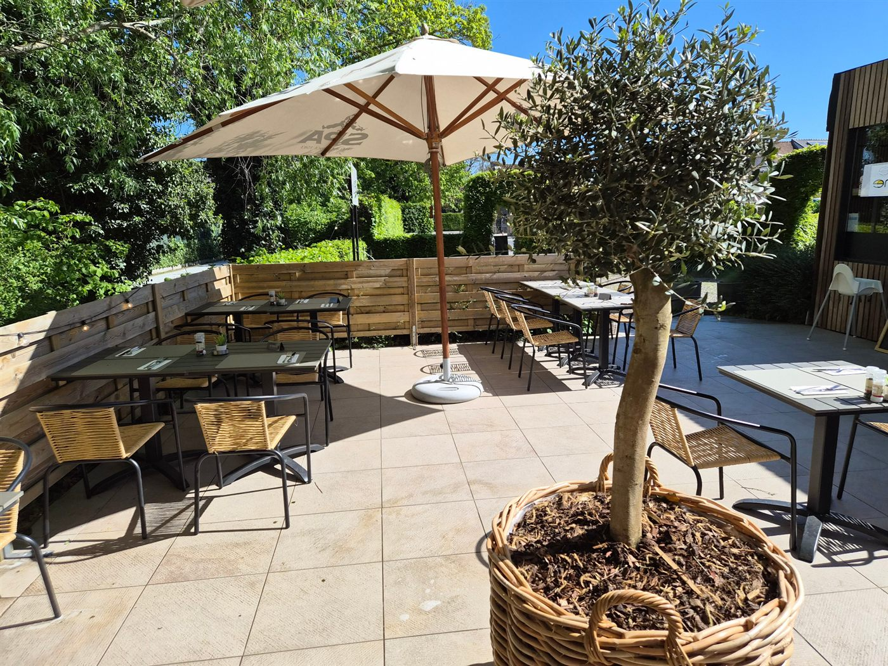
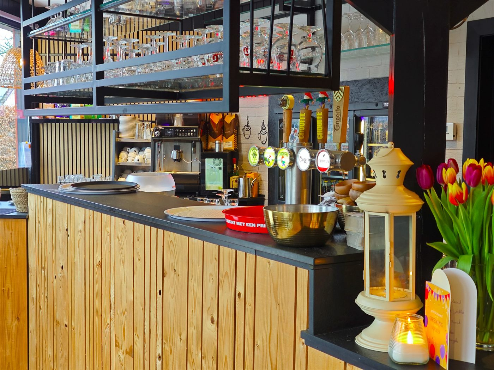
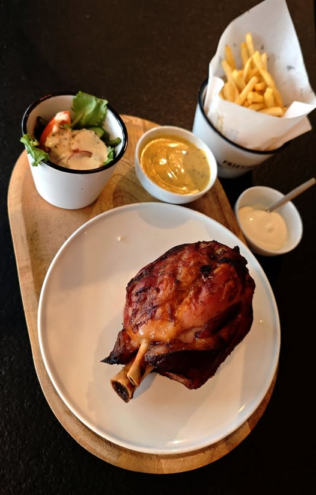

Pannenkoeken
Dun, goudbruin en vers gebakken. Van klassiek met suiker tot royaal belegd met chocolade, fruit of slagroom.
Vanaf 14u

Pannenkoeken · Wafels · Lunch · IJs
In het mooie ver Assebroek, aan de rand van de fietsroute en de oude spoorwegbedding. Jan en Melina heten u vanaf 2026 van harte welkom in ons totaal vernieuwd interieur.
Woensdag t.e.m. zondag · 11u – 19u
Over ons
Bistro De Peerdeblomme ligt in het mooie ver Assebroek, aan de rand van de fietsroute en de oude spoorwegbedding — de ideale pauzeplek voor wandelaars en fietsers. Vanaf 2026 heten Jan en Melina u van harte welkom in ons totaal vernieuwd interieur.
Peerdeblomme is West-Vlaams voor paardenbloem — de vrolijke gele bloem die de lente aankondigt. Die warmte en eenvoud proef je in alles wat we serveren: vers gebakken pannenkoeken en wafels, een gezellige lunch en een lekker ijsje op ons zonnige terras.


Wat we maken
Elke week stellen we een vers lunchmenu samen. De volledige kaart en het menu van de week vind je steeds op onze Facebookpagina.
Dun, goudbruin en vers gebakken. Van klassiek met suiker tot royaal belegd met chocolade, fruit of slagroom.
Vanaf 14u
Krokant vanbuiten, zacht vanbinnen. De echte Belgische wafel zoals hij hoort — met een toef poedersuiker of naar keuze.
Vanaf 14u
Een verzorgde, wekelijks wisselende lunch. Ideaal voor een gezellige middagpauze in Assebroek.
Keuken open vanaf 12u
Een lekker ijsje, een frisse drank of een warme koffie — perfect om even tot rust te komen op ons terras.
De hele dag
Fotogalerij
Ons vernieuwde interieur, het zonnige terras en enkele van onze gerechten. Klik op een foto om ze groter te bekijken.
Openingsuren
| Maandag | Gesloten |
|---|---|
| Dinsdag | Gesloten |
| Woensdag | 11u – 19u |
| Donderdag | 11u – 19u |
| Vrijdag | 11u – 19u |
| Zaterdag | 11u – 19u |
| Zondag | 11u – 19u |
Openingsuren
Dagelijks open van 11u tot 19u voor een gezellige lunch, een pannenkoek, een ijsje of een lekkere wafel.
Maandag en dinsdag zijn we gesloten.
Reserveren? Bel 0478 77 06 01Contact & ligging
Je vindt ons in de Weidestraat in Assebroek, vlak bij Brugge. Parkeren kan vlot in de buurt.
Adres Weidestraat 313 · 8310 Assebroek
Telefoon 0478 77 06 01
E-mail depeerdeblomme.assebroek@gmail.com
Facebook Volg De Peerdeblomme
Ondernemingsnummer BTW BE 1030.795.442